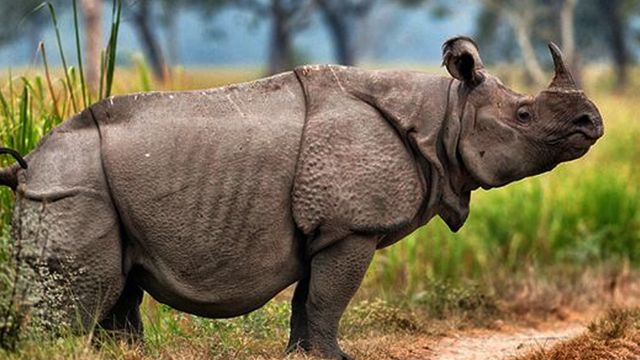
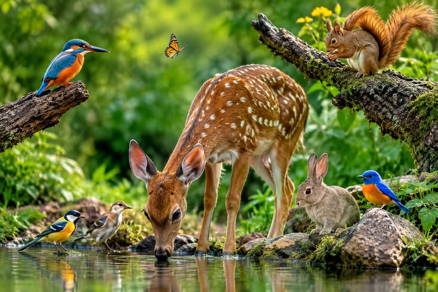
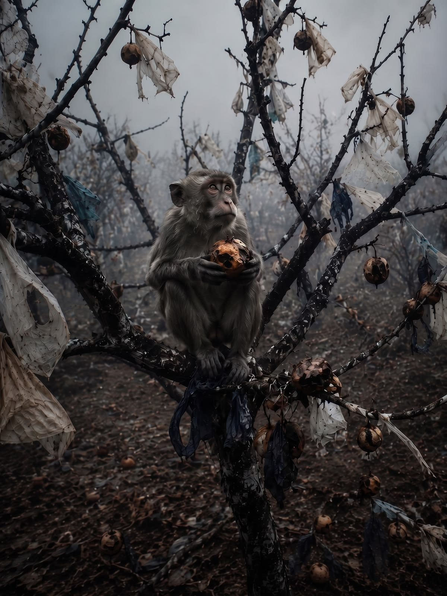

Informasi Penting
Mereka masih hidup di bumi ini, tetapi keberadaannya semakin terancam. Kehilangan satu spesies berarti kehilangan bagian penting dari keseimbangan alam.

Ketika Kehidupan Mereka Terancam
Satwa terancam punah adalah hewan yang menghadapi risiko tinggi untuk mengalami kepunahan di alam liar. Jumlah populasinya terus menurun akibat berbagai tekanan terhadap lingkungan dan aktivitas manusia.
Di Indonesia, beberapa satwa seperti orangutan, harimau Sumatra, badak Jawa, dan gajah Sumatra menghadapi ancaman serius terhadap kelangsungan hidupnya. Mereka masih ada, tetapi membutuhkan perlindungan agar tidak benar-benar menghilang dari bumi.
Badak Jawa merupakan salah satu mamalia paling langka di dunia. Populasinya yang tersisa hanya ditemukan di Taman Nasional Ujung Kulon, Indonesia.

Setiap Satwa Memiliki Perannya
Setiap hewan memiliki fungsi tersendiri dalam menjaga keseimbangan ekosistem. Kehilangan satu spesies dapat memengaruhi hubungan antara makhluk hidup dan mengganggu rantai kehidupan di alam.
Menjaga Rantai Makanan
Predator dan mangsa membantu mengendalikan populasi sehingga keseimbangan ekosistem tetap terjaga.
Menyebarkan Biji Tanaman
Hewan pemakan buah seperti orangutan membantu menyebarkan biji dan mendukung regenerasi hutan.
Menjaga Keanekaragaman Hayati
Setiap spesies berkontribusi dalam mempertahankan keberagaman kehidupan dan kestabilan ekosistem.
Menjaga Keseimbangan Alam
Interaksi antarspesies membantu menjaga fungsi habitat dan kelangsungan kehidupan berbagai organisme.

Ancaman yang Mengintai Kehidupan Satwa
Penurunan populasi satwa tidak terjadi begitu saja. Berbagai aktivitas manusia dan perubahan lingkungan menyebabkan habitat semakin rusak, sumber makanan berkurang, serta ruang hidup satwa semakin terbatas.
Kerusakan Habitat
Penebangan hutan dan alih fungsi lahan menghilangkan tempat tinggal serta sumber makanan satwa.
Perburuan Liar
Perburuan untuk mengambil kulit, gading, tanduk, maupun bagian tubuh lainnya mengancam kelangsungan hidup berbagai spesies.
Perdagangan Satwa Ilegal
Penangkapan dan perdagangan satwa secara ilegal menyebabkan populasi di alam semakin berkurang.